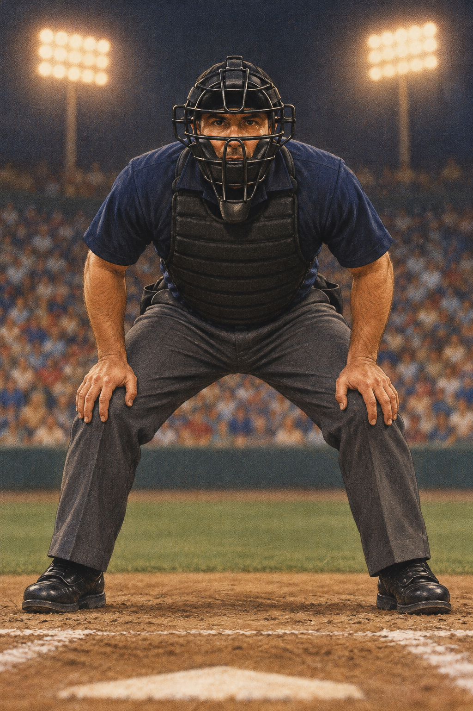

Batter Bats R
vs Pitcher RHP
2026 World Series
Today's TenClose calls · MLB umps ≈ 94%Close callsMLB ≈ 94%
Ump called it Ball
Today's Ten: real pitches from Games 1, 2 and 5 of the 2026 World Series, 8 of them close calls within 1.5 in of the zone, at real speed, from the plate umpire's eye.
Real pitches: MLB Stats API (statsapi.mlb.com). Personal, non-commercial mockup. ABS truth reconstructed from tracking data and matches all 29 real challenges in the Series. Players, field and catch are illustrations.
Round complete.

Miss map
Real pitches: MLB Stats API (statsapi.mlb.com). Personal, non-commercial mockup. ABS truth reconstructed from tracking data and matches all 29 real challenges in the Series. Players, field and catch are illustrations.